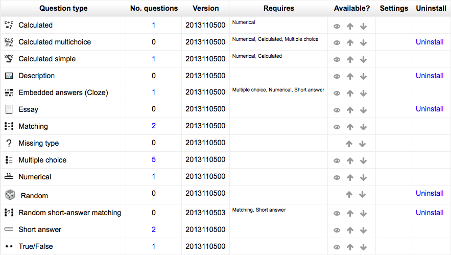

An administrator (or manager or any user with the capability moodle/question:config) can manage question types available across the site in Administration > Site administration > Plugins > Question types > Manage question types.
This shows the number of questions of that type in the entire Moodle site. If the number is non-zero, it will be a link to a report that shows you where in the question bank (which contexts) those questions are.
If the question type has its own database tables, then the version of those tables is displayed here.
Some question types rely on others to operate correctly. If so, the required question types are listed here.
If you make a question type unavailable, then users will no longer be able to create new questions of that type. However, existing questions of that type will continue to work, so existing quizzes will continue to work, and old quiz attempts can be reviewed.
The up and down arrows let you control the order of the question types in the list where teachers select which type of question they wish to create.
If
- there are no questions of a particular type, and
- if this question type is not required any any other question type, and
- if this question type is neither Random nor Missing type, which are required by the question type system,
then you can uninstall it by clicking on the delete link.
Some question types have configuration options. If so, a settings link will appear in this column.